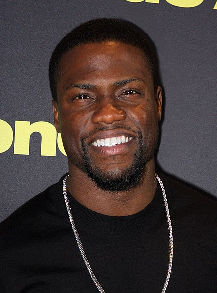

BIO of Kevin Hart

Kevin Darnell Hart (born July 6, 1979) is an American comedian and actor. Originally known as a stand-up comedian,
he has since starred in Hollywood films and on TV. He has also released several well-received comedy albums.
After winning several stand-up comedy competitions, Hart had his first breakthrough when Judd Apatow cast him in a recurring role on the TV series Undeclared (2001). He has since had roles in films such as Paper Soldiers (2002), Scary Movie 3 (2003), Soul Plane (2004), In the Mix (2005), Little Fockers (2010), Think Like a Man (2012), Grudge Match (2013), Ride Along (2014) About Last Night (2014), Get Hard (2015), Central Intelligence (2016), The Secret Life of Pets film franchise (2016–2019), Ride Along 2 (2016), Captain Underpants: The First Epic Movie (2017), the Jumanji film franchise (2017–present), and Night School (2018). He also created and starred as a fictionalized version of himself in Real Husbands of Hollywood (2013–2016).
Hart's comedic reputation continued to grow with the release of his first stand-up album I'm a Grown Little Man (2009). He has since released four more comedy albums: Seriously Funny (2010), Laugh at My Pain (2011), Let Me Explain (2013), and What Now? (2016). In 2015, Time magazine named him on its annual list of the 100 most influential people in the world.[1] In 2017, he launched the Laugh Out Loud Network, a subscription video streaming service in partnership with Lionsgate.
Places he lived:
- New York
- Philadelphia
- California
"AT THE END OF THE DAY WOMEN ARE DISTRACTION. WHETHER YOU REALIZE IT OR NOT"